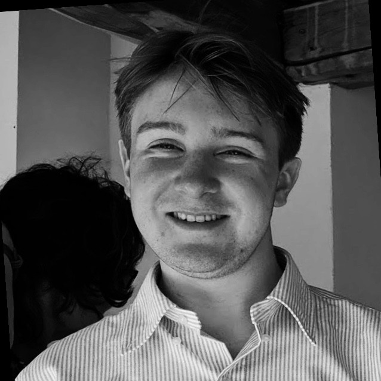

***
My name is Rufus Lee-Browne, and I am a second year undergraduate studying Chinese at the University of Edinburgh.
I am also an aspiring journalist, writing frequently for The Student newspaper, where I currently serve as Features Editor. Topics I follow and enjoy writing about include global politics, technology, civil society, and the arts and sciences.
Below you will find a small seleciton of stories I've written for The Student. Have a read, perhaps you'll find something you like :)
Feel free to contact me via email, or on Twitter @rufusleebrowne.
***
Writing
(18/02/21) The Student's White House Correspondents on Biden's first 100 days
(20/02/21) Inside China's battle to suppress Covid
(19/01/21) Soup and sailing with Murray MacDonald * an inteview with an Edinburgh legend
(29/01/21) BANNED: Trump's 'legacy' now cancelled * please excuse the typo on the website, my EIC is American (nothing against her, or Americans - I'm a friend and ally to all!)
(11/10/20) Ginsburg v Barrett, an open seat on the US Supreme Court
(30/09/20) New name, who dis? University of Edinburgh's David Hume Tower renamed to 40 George Square